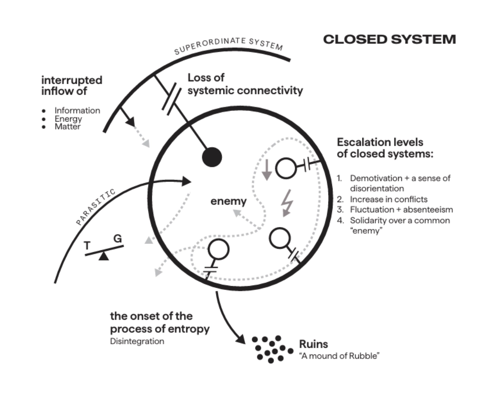
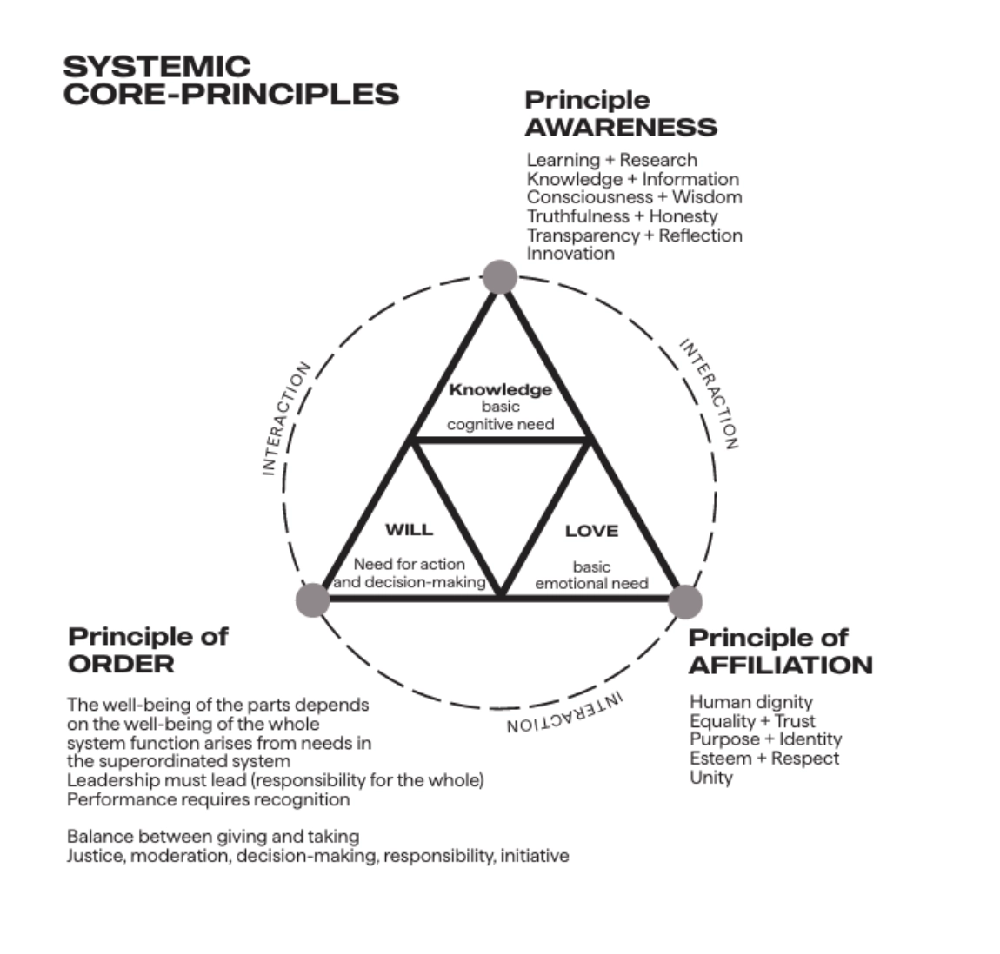
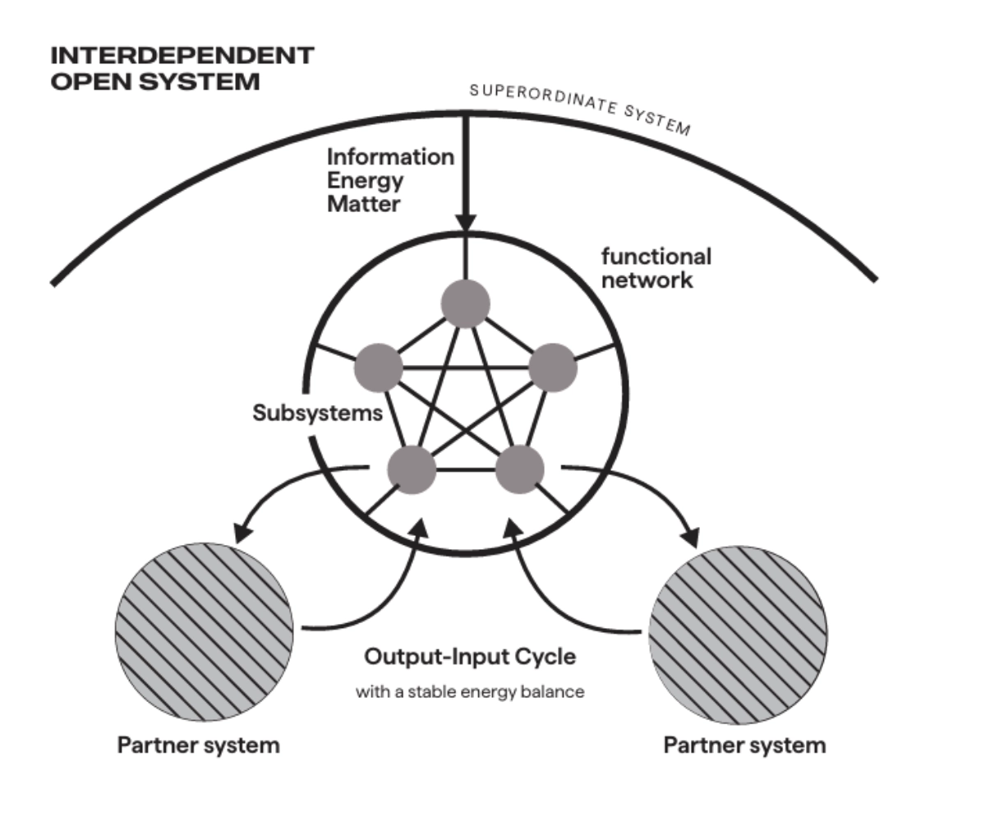
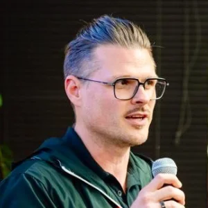
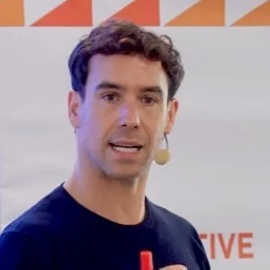

Keenness of understanding is due to keenness of vision.
We take responsibility to nurture a sense of belonging and true identity in the systems we steward, in service to the unity of humanity.Start with a Conversation
“Doing well by doing good is not only possible—it is the only way to do business in the future." ~Ray Anderson
The lone wolf is over.
The future is collective.
Hierarchical structures, where power is concentrated at the top, were once the norm.
The world has changed. Today's organizations operate in conditions of profound complexity and interdependence. Traditional, rigid approaches are no longer sufficient because they no longer serve the current needs of humanity. Systems that fail to recognize this shift, from hierarchical highly-dependent to more collective and interdependent forms of organization, stagnate, disintegrate, and are doomed to fail.
That disintegration doesn't happen all at once. It moves through intensifying stages of escalation, each one observable, each one a sign that the system has lost its systemic connectivity to the greater whole. And, it is rarely felt at the top first. Everything seems right in the control room, while things are failing on the launch pad.

What follows are the signs of disintegration at the symptomatic level:
Demotivation and disorientation
When the connection to a higher purpose breaks, orientation goes with it. People can no longer derive their function, their meaning, or their reason to bring their best. What fills the space is anxiety, frustration, confusion and quiet quitting. Leadership responds with motivation events. It does not work, because the problem is not motivational. It is systemic.
An increase in conflicts and bottlenecks
Without a clear functional structure, people fall back on personal relationships and informal loyalties. Misplaced trust, communication breakdown, and power struggles follow. Leadership tells people to be professional, set aside their feelings, work it out. This also does not work, because conflict at this stage is not personal. It is a signal that the system has lost its structural center.
Fluctuations and increases in absences
First internally, then formally. Turnover rises. Absences multiply. Leadership responds with terminations and personnel changes, placing the cause on individuals rather than the system. This accelerates the drift. The people who leave are not the problem. They are the evidence.
Solidarity against a common enemy
This is the final stage, because it looks like recovery, a wrong sense of unity. People unite against an enemy. Energy returns, a sense of purpose reappears. But look closer: the unity is not around a shared mission. It is against a shared threat. Conformity. The enemy is interchangeable. When no external one exists, an internal scapegoat will do. This is not cohesion. It is the final signal before collapse.

All charts and images used with permission. The Open System Model (OSM®). Kambiz Poostchi.
From control to contribution
We are looking at a shift of paradigm. A shift from power to empowerment, from control to contribution, from centralized to decentralized systems.
The world is more connected, more complex, and more interdependent than it has ever been. The old playbook—fix the parts, optimize the individuals, manage the symptoms—has reached its limit. The effort is there. The alignment isn't. The problems that arise are systemic in nature, and you cannot solve a systemic problem with fragmented thinking.
Today, being future-ready requires far more from companies and organizations than simply ensuring their economic success. People—both within organizations and in their private lives—are increasingly seeking meaning and fulfillment.
The next frontier in business requires a necessary evolution in how companies understand themselves and the world they operate in. The companies that will thrive are the ones that learn to see the whole first, and derive everything else from there.
In this context, leadership carries a particularly important responsibility: to exercise systemic principles and to foster environments where people and organizations can prosper.
When such a vision is clear, understanding, decision-making, action, and reflection are all within reach. Success becomes sustainable, relationships strengthen, and a lived culture of collaboration emerges.

An evolution of consciousness, not a management technique.
People who truly feel a sense of belonging will go the extra mile for their organization.
However, belonging requires something to belong to. It must be clear what the organization or team stands for, the purpose it serves, and the values and principles that guide its actions.
Awareness
Awareness means having the courage to recognize early signals of change and responding to them proactively. The long-term success of any organization depends on its willingness and ability to learn and adapt.
Affiliation
A strong sense of belonging requires a clear purpose, shared values, and well-defined principles that people can identify with. A culture of respect and appreciation is where every individual is valued regardless of their role or position.
Order
Order provides the structure that enables an organization to make decisions and act effectively in pursuit of their mission. Leadership's function is to keep the company connected to what it serves, to own the vision. The health of the parts depends on the health of the whole.
These three interrelated principles govern all social systems and serve as pillars of mature organizations. Like gravity, one may question them—but ignore them, and the fall is inevitable. Systemic maturation is the daily practice of these principles in the life of an organization. The consequence is interdependence: responsibility that extends beyond self and team to the whole.

All charts and images used with permission. The Open System Model (OSM®). Kambiz Poostchi.
A 90-second self-check
Are you Leading or Simply Managing?
Seven Reflection Questions for Your System
The idea is the reality.
We see ourselves as pioneers and practitioners on a continuous learning journey, helping people take responsibility for the systems they belong to and find their unique place within them.
Companies and teams become genuinely capable of learning together when they have clearly defined their purpose, their place, and their mission.
The questions underneath:
- Which larger system does the work serve?
- What needs does it fulfill?
Identity is not determined by behavior alone. It is shaped by belonging to a greater whole–and from that belonging, an organization's values, capabilities, and ultimately its actions follow.
The Open System Model® (OSM)
Our work is grounded in the Open System Model® (OSM), state of the art in leadership development, which treats individuals and organizations as what they are—living systems: connected, purposeful, and responsible to the larger whole.


Let the vision be world-embracing.
In a social environment increasingly characterized by the erosion of values and the loss of meaning; the cult of individualism and emotional detachment; a lack of mindfulness, commitment, and responsibility; excessive competition and the pursuit of hedonistic goals; and the fear of difference alongside injustice, we are witnessing a growing need among people, both in society and within organizations, for a more humane environment.
There is an increasing desire for inner and outer peace; for orientation and clarity; for effective leadership and personal and organizational growth; for responsible, mindful action grounded in systemic awareness; for mutual respect; and, above all, for a profound sense of belonging.
Our client work spans aviation, hospitality, automobile industry, manufacturing, med-tech, fin-tech, finance, education, artificial intelligence, and governmental institutions. Some of the client work includes, but is not limited to Marriott, Bosch, Canva, Boeing, Siemens, Volkswagen, MAN, TAAG, Merck, and Fortune 500 leadership teams. We have worked with organizations and institutions, as well as with participants from across Europe, the Americas, Africa, and the Middle East, in more than 15 countries spanning Sweden, Germany, Italy, Austria, Spain, Romania, Portugal, the United Kingdom, the United States of America, Chile, Ecuador, Brazil, Argentina, South Africa, Angola, Iran and Israel.
“Human beings have a responsibility to work against the atomization of individuals and the struggle of all against all. In doing so, they contribute to the unification of the world.” — Pierre Teilhard de Chardin (1881–1955) French Jesuit priest, philosopher, anthropologist, and paleontologist.
What are the next steps?
If
your organization is experiencing symptoms such as low motivation, recurring conflict, or internal power struggles
Then
begin by raising leaders' awareness of systemic leadership principles and invest in training on systemic communication
If
your organization is predominantly driven by management processes and day-to-day operations, and employee engagement relies mainly on task orientation and reward systems
Then
now is the time to develop a foundational concept for systemic organizational development, align employee development with the progression of systemic maturity, and gain practical experience through a carefully designed pilot project
If
your organization is open to systems-based approaches and committed to fostering collaboration and employee development
Then
now is the ideal time to establish a systems-oriented organizational purpose and values framework while investing in the development of systemic leadership capabilities
If
your organization demonstrates a strong mission, a clear vision, and genuine teamwork
Then
now is the right time to align all organizational processes with systems thinking principles and accelerate the development of high-performing teams
Let’s get in touch to look deeper at what's trying to emerge and what's asking to mature. Let’s unearth and polish these pearls of potential.
About the practitioners
Every human being is born noble and is born to flourish. Adam P. Lugsch-Tehle

Adam P. Lugsch-Tehle
Adam P. Lugsch-Tehle is called to foster congruency and connection to self and within those he serves, connecting more people to the source of Oneness, that which he feels most affiliated with.
Vocationally, he is a seasoned existential and lifestyle coach and systemic leadership consultant. Adam brings over 20 years of applied learning in action across multiple industries, including communications, consultancy, filmmaking, education, leadership and development, and executive coaching.
With a degree in Honors Philosophy, an MAT in teaching, and a deep commitment to personal and professional development, his journey has taken him from serving Fortune 500 companies and coaching solopreneurs, entrepreneurs, and C-suite executives, to leading Emmy award-winning film projects, and ultimately to empowering individuals to reach their highest potential in service to an ever-advancing civilization.
Adam also dedicates time to families affected by substance use and process use disorders, guiding them through a specialized coaching program designed to foster hope, growth, and healing.
Every person carries pearls of potential. Our work is to discover them, develop them, and help them shine. Andreas Fabian Galsterer

Andreas Fabian Galsterer
Like a diver after pearls: searching out potential and polishing those pearls until they shine.
Andreas Fabian Galsterer specializes in systemic leadership development, systemic thinking, team effectiveness, communication, and organizational transformation. He works with leaders, teams, institutions, government, and organizations across Europe, Asia, Africa, and the Americas, supporting them in navigating complexity, strengthening collaboration, and fostering sustainable performance.
His facilitation approach combines systemic leadership, collective intelligence, emotional maturity, communication excellence, and human-centered organizational development to create meaningful and lasting impact. Applied tools range from systemic thinking, organizational constellation executive coaching and somatic timeline regressions.
For over a decade, he has supported executives, leadership teams, entrepreneurs, and organizations in strengthening collaboration, navigating complexity, and creating cultures of trust, accountability, and innovation.
Testimonials
What clients say after working with us.
Start with a Conversation
Thank you.
Your message has been sent. We'll be in touch soon.
“The place God calls you to is the place where your deep gladness and the world’s deep hunger meet.” — Frederick Buechner